ggplot(data = LA90024_Buildings) +
geom_point(aes(x = Floor_Area,
y = CO2_Emissions)) +
labs(title = "CO2 emissions by Floor Area") +
xlab("Floor Area") +
ylab("CO_2 Emissions")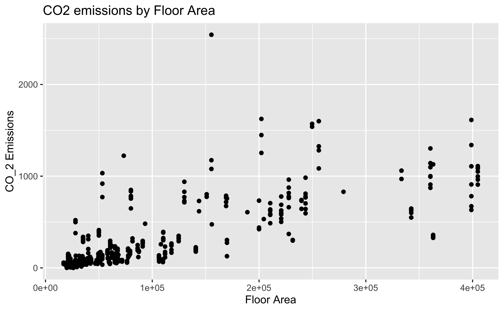
Problem 1 - The LA90024_Buildings.RData (you can download this in Week 3 of BruinLearn) has some information on buildings in the 90024 Zip Code (Westwood in Los Angeles) that you may find interesting.
Problem 2 - Just some numeric X & Y data used as a example, but the homework problem should use the building data from Problem 1. you can supply your own data if you want for this problem.
Problem 3 - For geom_hex() used movies taken from an IMDB database (originally from Kaggle). For geom_tile() data were obtained from Yahoo Finance TSLA as an example but using AAPL here. You can use the movie data or try a different stock (like TSLA) or stocks (would require more data handling but if its your area of interest, why not?)
Pleae examine the next two graphics, what are things that we can do to make our visualizations tell a more compelling story? You can try programming your response (preferred) or provide a hand drawn sketch. Any language is acceptable.
Here is a graphic of Floor_Area (building size) and CO2 emissions (a measure of pollution or warming), how could we improve this to make its story more interesting or useful (feel free to examine the distribution of the x and y variables individually if it helps)?
ggplot(data = LA90024_Buildings) +
geom_point(aes(x = Floor_Area,
y = CO2_Emissions)) +
labs(title = "CO2 emissions by Floor Area") +
xlab("Floor Area") +
ylab("CO_2 Emissions")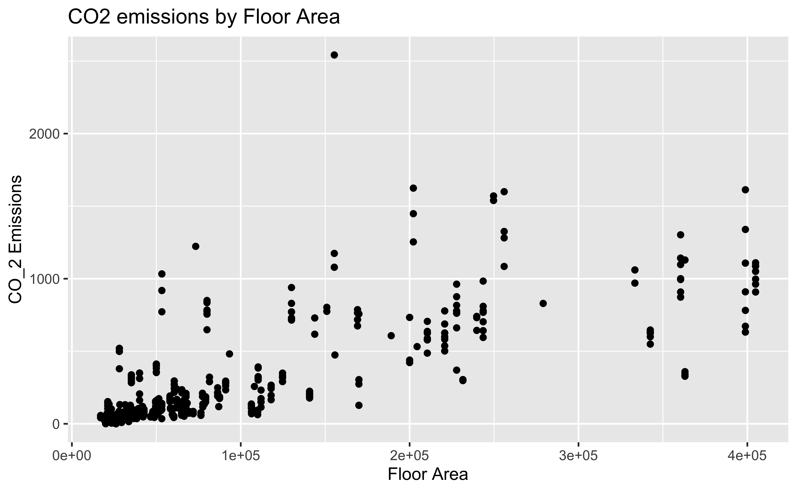
Here is a graphic of Floor_Area (building size) and Water Usage. Again, what can we do to make this a little more useful to others? What is the story in here?
ggplot(data = LA90024_Buildings) +
geom_point(aes(x = Floor_Area,
y = Water_Use)) +
labs(title = "Water Usage by Floor Area") +
xlab("Floor Area") +
ylab("Water Use")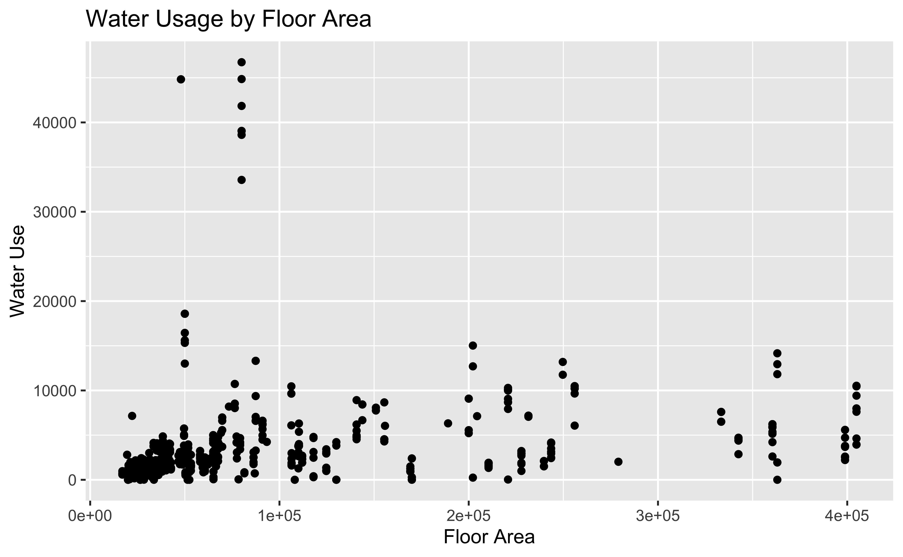
Suppose you have been asked to model either CO2 emission or Water Use (Y - but just choose one) on Floor Area (X). A regression type of line is what we would like to see, but three forms
here are examples using a different x & y relationship
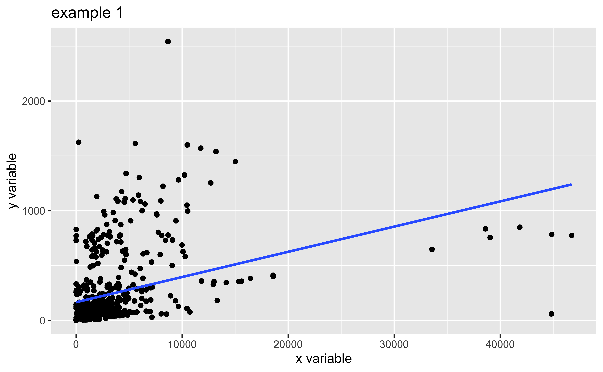
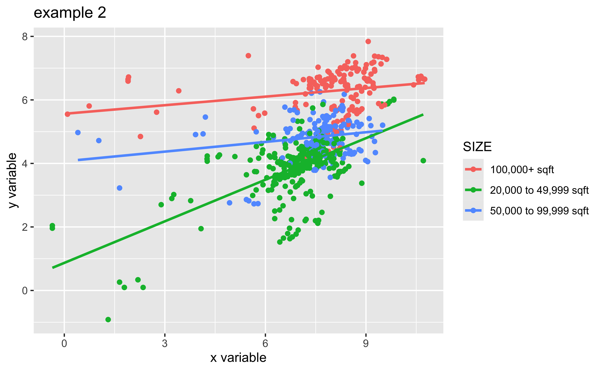
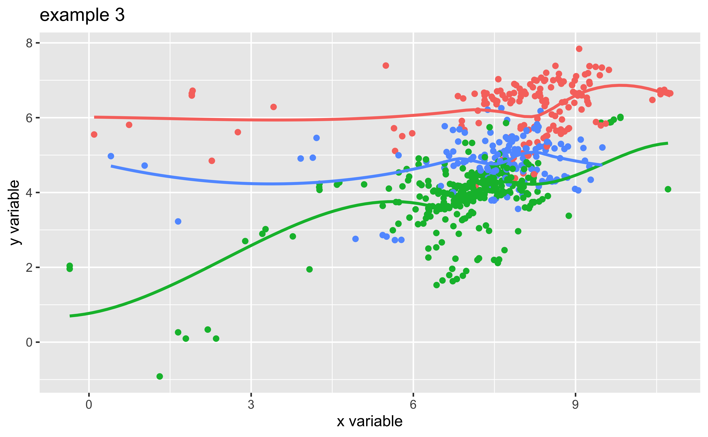
More work with heatmaps. I’d like you to try either a geom_hex or a geom_tile (of course you could do both, but one is fine). Both X and Y here are numeric in all of these examples but ordered factors should work (so if you want to use something like a sports related dataset with teamnames etc.). You can use the data I used (least preferred) or supply your own from your thesis or other interests (most preferred) OR use something like diamonds, iris, etc. (in the middle)
A trick is to use scale_fill_gradientn() to build your own colors scheme. I’ll show you the basic code and then what you want to is modify it some way.
movies <- read_csv("https://raw.githubusercontent.com/lewv/S24STATS101A/main/data/movies.csv")Rows: 7551 Columns: 15
── Column specification ────────────────────────────────────────────────────────
Delimiter: ","
chr (9): name, rating, genre, released, director, writer, star, country, com...
dbl (6): year, score, votes, budget, gross, runtime
ℹ Use `spec()` to retrieve the full column specification for this data.
ℹ Specify the column types or set `show_col_types = FALSE` to quiet this message.A basic geom_hex() style heat map, added color = “white” to give it a border otherwise it is really unattractive (very dark by default)
ggplot(movies, aes(x = year, y = score) ) +
geom_hex(color = "white")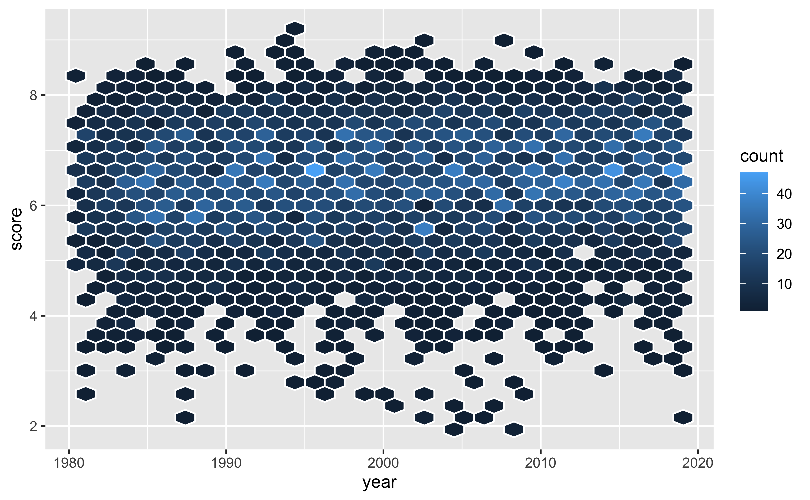
Adding a scale_fill_gradientn() (your homework part is to figure out how to make it work). I did something simple and used the rainbow() function, like rainbow(4) to generate this color scheme.
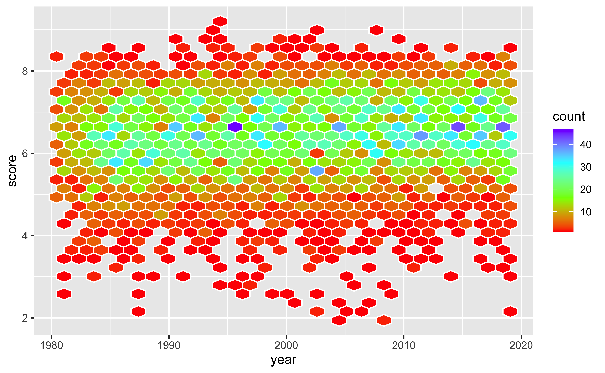
If we remove color= “white” from geom_hex(), we obtain a softer more “watercolor” effect in ggplot:
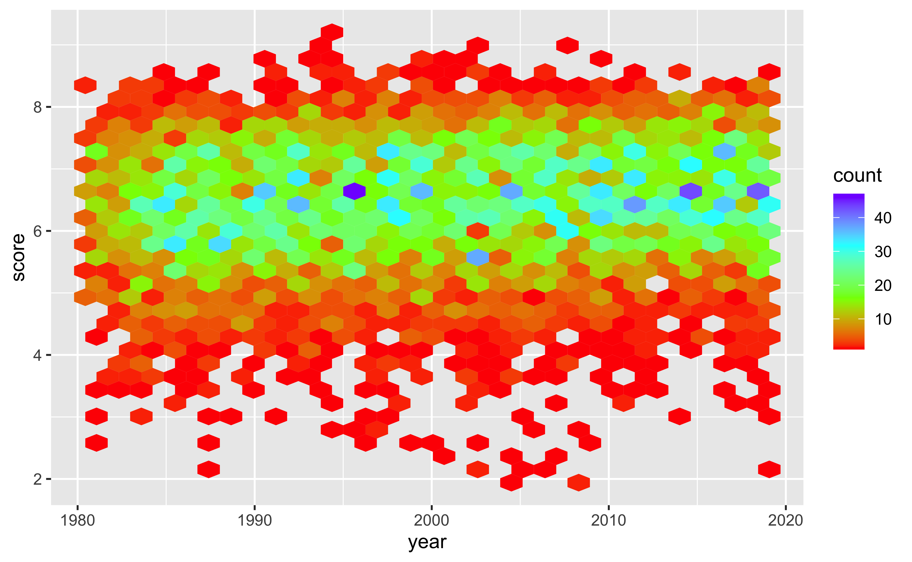
For this stock market graphic, handling the dates correctly is key. So this second graph is more a data management issue.
Since there are lots of dates, use lubridate and try to maximize the information extracted from a date. The following gives us week of the year, day of the week (Monday = 1) and year.
AAPL <- read_csv("https://raw.githubusercontent.com/lewv/S24STATS101A/main/data/AAPL.csv") %>%
mutate(week = isoweek(Date),
wday = wday(Date, week_start = 1),
year = year(Date))geom_tile() is another good heatmap generator in R. Like geom_hex (or any other graphic) adding color will be key but getting the basic aes() is just as important:
ggplot(data= AAPL, aes(x = week,
y = wday,
fill = Close)) +
geom_tile()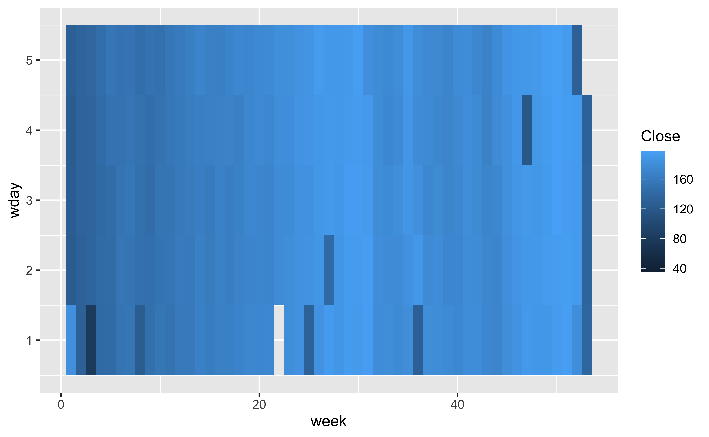
This is where faceting is so useful and using a color to create borders can be helpful especially when presenting information. Still ugly and five times as much now…
ggplot(data= AAPL, aes(x = week,
y = wday,
fill = Close)) +
geom_tile(color = 'white') +
facet_wrap(~ year) 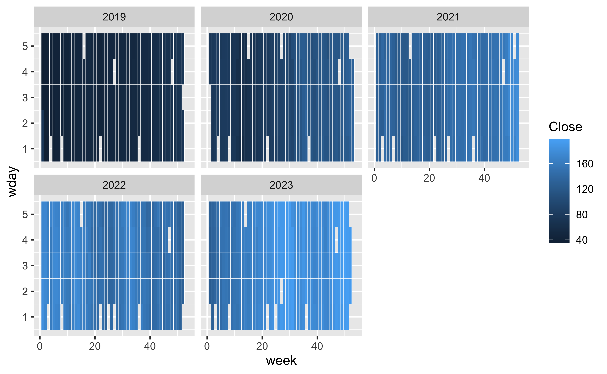
Faceting has lots of options. One option is think of the graphic as a storyboard and to use the scrolling idea to your advantage. This will also make each graphic wider which will help with the x-axis labels:
ggplot(data= AAPL, aes(x = week,
y = wday,
fill = Close)) +
geom_tile(color = 'white') +
facet_wrap(~ year, ncol = 1) 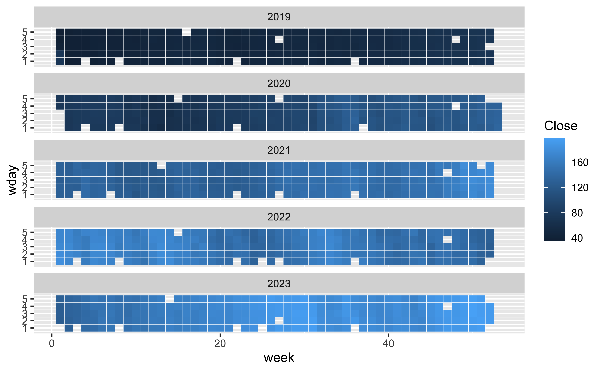
Lastly, add a scale_file_gradientn (chose your own colors) to make the graphic more lively.
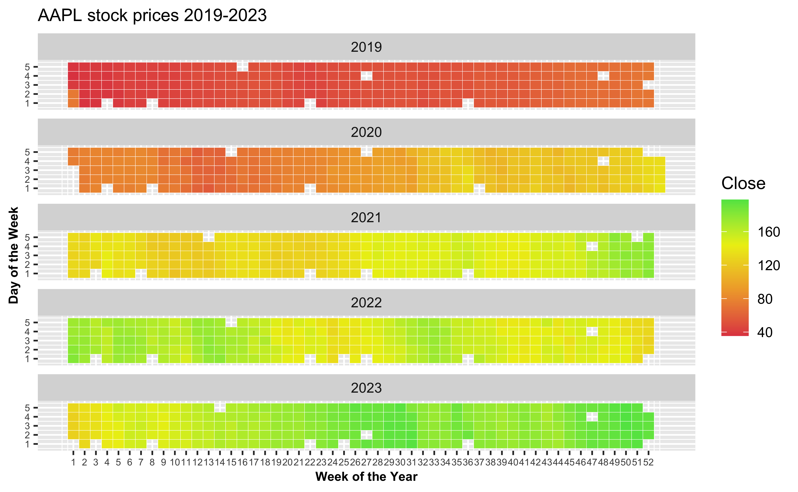
Additional suggestions, you can always modify theme to help readability:
theme(axis.text = element_text(size = 6),
axis.title = element_text(size = 8, face = "bold"))You might even add something like a weekly statistic or a monthly one to your graph within year. You would need to perform some additional data handling though.
Your resulting graphics for 1, 2 and 3 and a copy of the code that produced them.
They look dull but are so modifiable and more important – everyone understands them.
I wanted to add a problem on modified barplots, but it got too involved because great barplots involve intensive modification and data handling.
So, instead, here are a few examples, the last one taken directly from a professional on the internet and modified so that you can run and modify it on your own versions of R:
# Libraries
library(tidyverse)
# Create dataset
ikea <- read_csv("https://raw.githubusercontent.com/lewv/S24STATS101A/main/data/ikea.csv")
ikea_group <- ikea %>%
group_by(category) %>%
summarise(mean_price = mean(price, na.rm = TRUE)) %>%
mutate(id = row_number()) %>%
ungroup()
# Get the name and the y position of each label
label_data <- ikea_group
# calculate the ANGLE of the labels
number_of_bar <- nrow(label_data)
angle <- 90 - 360 * (label_data$id-0.5) /number_of_bar # Subtract 0.5 because the letter must have the angle of the center of the bars. Not extreme right(1) or extreme left (0)
# calculate the alignment of labels: right or left
# On the left part of the plot, my labels have currently an angle < -90
label_data$hjust <-ifelse(angle < -90, 1, 0)
# flip angle to make them readable
label_data$angle<-ifelse(angle < -90, angle+180, angle)
# ----- ------------------------------------------- ---- #
# Make the plot
p <- ggplot(ikea_group,
aes(x=as.factor(id),
y=mean_price)) +
# Note that id is a factor. If x is numeric, there is some space between the first bar and axis
# the bars with a blue color
geom_bar(stat="identity",
color = "black", # outline
fill=alpha("blue", 0.3)) +
# Limits of the plot = very important. The negative value controls the size of the inner circle, the positive one is useful to add extra space over each bar
ylim(-100, 3500) +
# Customize the theme: no axis title and no cartesian grid on the backgroud
theme_minimal() +
theme(
axis.text = element_blank(),
axis.title = element_blank(),
panel.grid = element_blank(),
plot.margin = unit(rep(-2,4), "cm") # Remove margin around plot
) +
# This makes the coordinate polar instead of cartesian.
coord_polar(start = 0) +
# add labels
geom_text(data=label_data, aes(x=id, y=mean_price+10, label=category, hjust=hjust), color="black", fontface="bold",alpha=0.6, size=2.5, angle= label_data$angle, inherit.aes = FALSE ) # inherit.aes very important because the original aes is in the ggplot function and not the geom.
p # show the graphic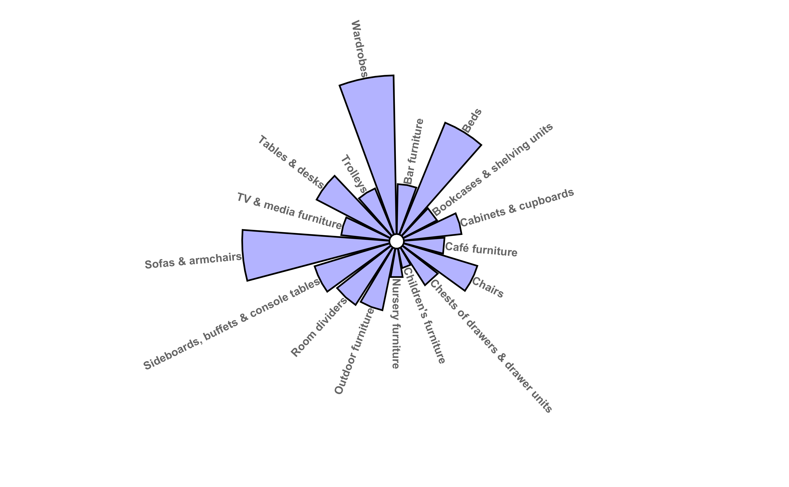
ggplot(data = ikea_group, aes(x="", y=mean_price, fill=category)) +
geom_bar(stat="identity", width = 0.75, color = "black") + # vary width for size of hole
coord_polar(theta="y") + # for circular plot
theme(legend.position = "bottom",
legend.text = element_text(size=5),
legend.key.size = unit(0.4, 'cm'),
legend.title=element_blank(),
panel.grid = element_blank(),
axis.text = element_blank(),
axis.title = element_blank(),
axis.ticks = element_blank()) +
annotate("text", x = 0, y = 0, label = "") # for the hole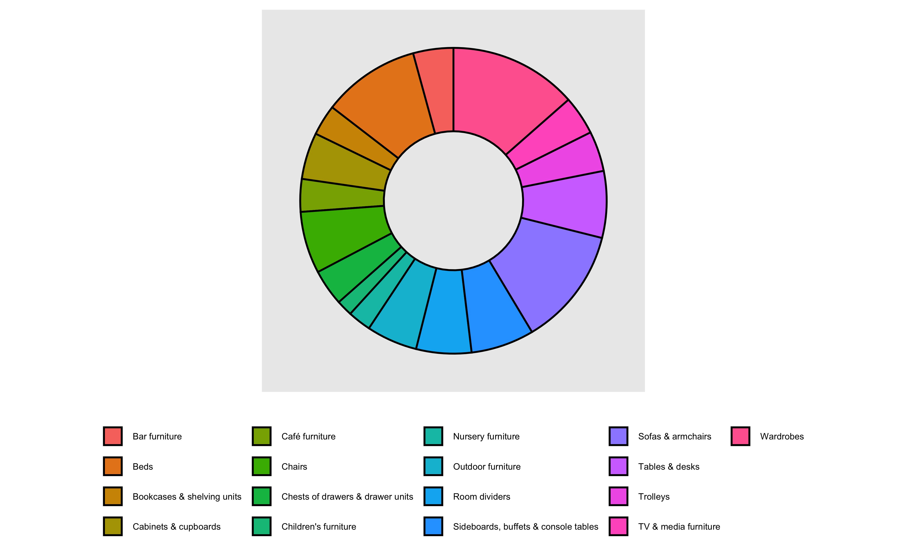
#tidytuesday winner November 2020
#data on washington hiking routes scraped by tidyx
#script by tobias stalder
#nov 2020
#tobias-stalder.netlify.app
# load libraries ----------------------------------------------------------
library(tidytuesdayR)
library(stringr)
library(scales)
# load data ---------------------------------------------------------------
tt_output <- tt_load("2020-11-24")
Downloading file 1 of 1: `hike_data.rds`hike_data <- tt_output$hike_data
# data manipulation -------------------------------------------------------
#1) extract 'region' (entry before "--" of location data)
word(hike_data$location,1,sep = " -- ") -> hike_data$region
hike_data$region <- as.factor(hike_data$region)
#2)extract miles
as.numeric(sapply(strsplit(hike_data$length, " "), "[[", 1)) -> hike_data$length_num
#3) transform everything necessary to numeric type
hike_data$gain <- as.numeric(hike_data$gain)
hike_data$highpoint <- as.numeric(hike_data$highpoint)
as.numeric(row.names(hike_data))-> hike_data$trackNr
hike_data <- data.frame(hike_data) #convert to dataframe (could also be done anywhere before)
#4) Calculate cummulative length, mean(gain)
summary_stats <- hike_data %>%
group_by(region) %>%
summarise(sum_length = sum(length_num),
mean_gain = mean(gain),) %>%
mutate(mean_gain = round(mean_gain, digits = 0))
#5) cummulative nr of tracks per region.
trackNrs <- hike_data %>%
group_by(region) %>%
count() #we can just count the number of entries here since 1 row = 1 track.
#6) join nr of tracks back to summary_stats
summary_all <- left_join(summary_stats, trackNrs, by = "region")
# data visualisation ------------------------------------------------------
#ggplot2
ggplot(summary_all) +
#make custom panel grid
geom_hline(yintercept = 0, color = "lightgrey") +
geom_hline(yintercept = 1000, color = "lightgrey") +
geom_hline(yintercept = 2000, color = "lightgrey") +
geom_hline(yintercept = 3000, color = "lightgrey") +
geom_col(aes(
x = reorder(str_wrap(region,5),sum_length), #is numeric
y = sum_length, #is numeric
fill = n), #is a factor
position = "dodge2",
show.legend = TRUE,
alpha = .9) +
#new fill and legend title for number of tracks per region
scale_fill_gradientn("Amount of Tracks",
colours = c( "#6C5B7B","#C06C84","#F67280","#F8B195"))+
#mean gain per region
geom_point(aes(x = reorder(str_wrap(region,5),sum_length),
y = mean_gain),
size = 3,
color = "gray12")+
#lollipop shaft for mean gain per region
geom_segment(aes(
x = reorder(str_wrap(region,5),sum_length),
y = 0,
xend = reorder(str_wrap(region,5),sum_length),
yend = 3000),
linetype = "dashed",
color = "gray12") +
#annotate the bars and the lollipops so the reader understands the scaling
annotate(x = 11, y = 1300,
label = "Mean Elevation Gain\n[FASL]",
geom = "text",
angle = -67.5,
color = "gray12",
size = 2.5)+
# family = "Bell MT"
annotate(x = 11, y = 3150,
label = "Cummulative Length [FT]",
geom = "text",
angle = 23,
color = "gray12",
size = 2.5)+
#,family = "Bell MT"
#annotate custom scale inside plot
annotate(x = 11.7, y =1100, label = "1000", geom = "text", color = "gray12", family = "Bell MT")+
annotate(x = 11.7, y =2100, label = "2000", geom = "text", color = "gray12", family = "Bell MT")+
annotate(x = 11.7, y =3100, label = "3000", geom = "text", color = "gray12", family = "Bell MT")+
#scale y axis so bars don't start in the center
scale_y_continuous(limits = c(-1500, 3500),
expand = c(0,0),
breaks = c(0, 1000, 2000, 3000))+
#add title, subtitle & caption
labs(title = "\nHiking Locations in Washington",
subtitle = paste("\nThis Visualisation shows the cummulative length of tracks,",
"the amount of tracks and the mean gain in elevation per location.\n",
"If you are an experienced hiker, you might want to go",
"to the North Cascades since there are a lot of tracks,",
"higher elevations and total length to overcome.",
sep = "\n"),
caption = "\n\nData Visualisation by Tobias Stalder\ntobias-stalder.netlify.app\nSource: TidyX Crew (Ellis Hughes, Patrick Ward)\nLink to Data: github.com/rfordatascience/tidytuesday/blob/master/data/2020/2020-11-24/readme.md") +
#transform to polar coordinate system
coord_polar() +
#theming
theme(legend.position = "bottom",
axis.title = element_blank(),
axis.ticks = element_blank(),
axis.text.y = element_blank(),
axis.text.x = element_text(color = "gray12",
size = 12),
panel.background = element_rect(fill = "white",
color = "white"),
panel.grid = element_blank(),
panel.grid.major.x = element_blank(),
text = element_text(color = "gray12",
family = "Bell MT"),
plot.title = element_text(face = "bold",
size = 25,
hjust = 0.05),
plot.subtitle = element_text(size = 14,
hjust = 0.05),
plot.caption = element_text(size = 10,
hjust = .5))+
guides(fill = guide_colorsteps(barwidth = 15,
barheight = .5,
title.position = "top",
title.hjust = .5))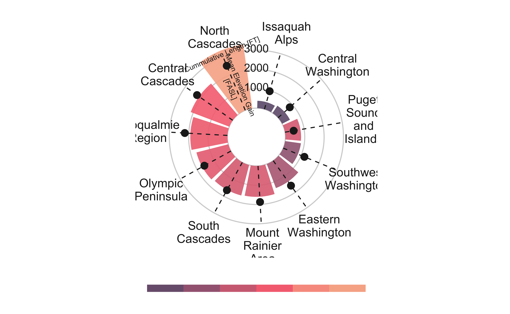